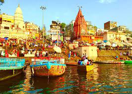

Top Pilgrimage Places in India
Explore the most popular pilgrimage sites in India, and discover their rich cultural and spiritual heritage.
Varanasi
Varanasi is one of the oldest and most sacred cities in India, located on the banks of the Ganges river. It is a major pilgrimage site for Hindus, who come here to bathe in the holy river and perform funeral rites. The city is also known for its numerous temples, including the Kashi Vishwanath Temple, one of the most revered Hindu temples in the country.
Tirupati

Tirupati is a temple town located in the state of Andhra Pradesh, famous for its Sri Venkateswara Temple. The temple is dedicated to Lord Venkateswara, a form of the Hindu god Vishnu, and is one of the most visited pilgrimage sites in the world, attracting millions of devotees every year.
Amritsar
Amritsar is a city in the state of Punjab, known for its Golden Temple, which is the holiest gurdwara (place of worship) for Sikhs. The temple is surrounded by a large man-made lake, and visitors can witness the beautiful and serene sight of the temple's reflection on the water at night.